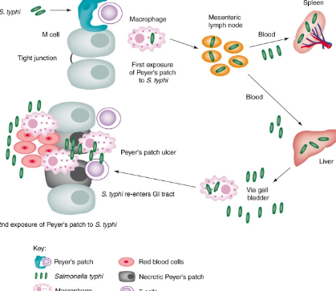
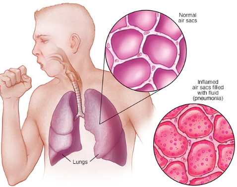

| 
| Thyphoid
Typhoid fever is a bacterial infection that can spread throughout the body, affecting many organs. Without prompt treatment, it can cause serious complications and can be fatal. It's caused by a bacterium called Salmonella typhi, which is related to the bacteria that cause salmonella food poisoning.
|
Medicins used for TyphoidCiprofloxacin (Cipro). In the United States, doctors often prescribe this for adults who aren't pregnant. Another similar drug called ofloxacin also may be used |
>
| 
| Pneumonia
Pneumonia is an infection that inflames the air sacs in one or both lungs. The air sacs may fill with fluid or pus (purulent material), causing cough with phlegm or pus, fever, chills, and difficulty breathing. A variety of organisms, including bacteria, viruses and fungi, can cause pneumonia.
|
Medicins for Pneumoniashould be given antibiotics as soon as possible if your pneumonia is likely to be caused by a bacterial infection. You will probably not be given antibiotics if the cause is likely to be a virus, such as coronavirus. This is because antibiotics do not work for viral infections. |
|
| Cholera
Cholera is a bacterial disease usually spread through contaminated water. Cholera causes severe diarrhea and dehydration. Left untreated, cholera can be fatal within hours, even in previously healthy people. Modern sewage and water treatment have virtually eliminated cholera in industrialized countries.
|
Medicins for CholeraTetracycline has been shown to be an effective treatment for cholera and is superior to furazolidone, cholamphenicol,and sulfaguanidine in reducing cholera morbidity. |